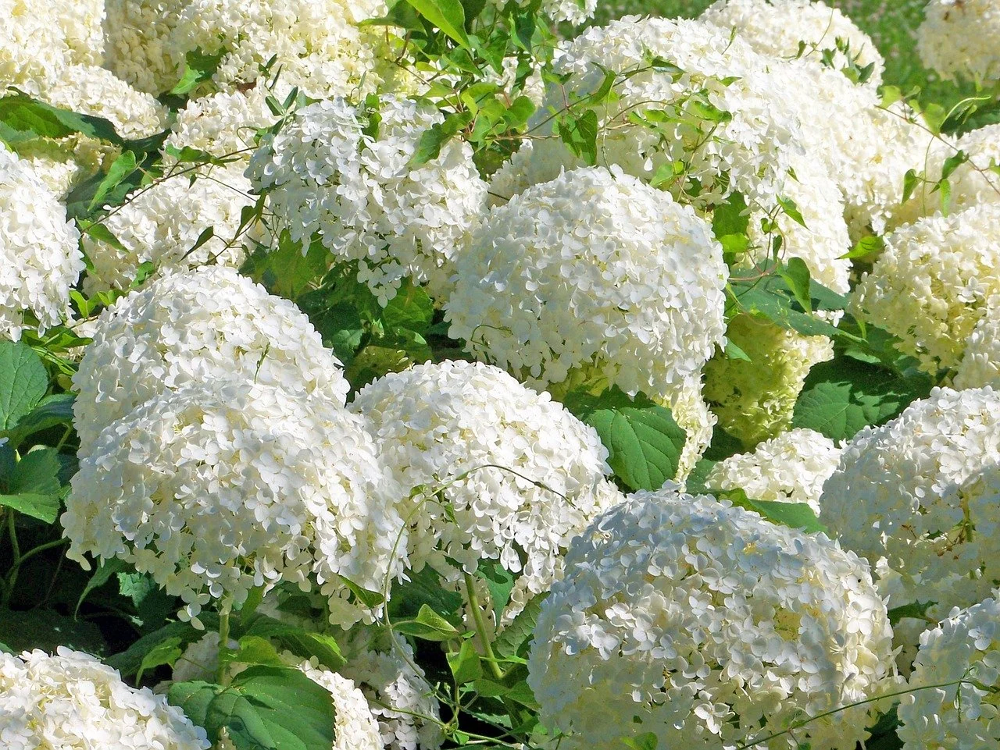
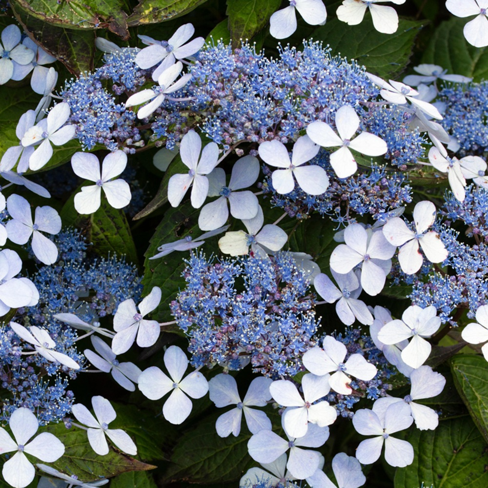

Iedere tuin helpt
Het gaat steeds slechter met de biodiversiteit op aarde. Er zijn steeds minder verschillende insecten, onder andere doordat er steeds minder groen is in steden, buurten en tuinen. Dat kan anders. Met deze tips maak je je tuin insectvriendelijker en help je onze kleine vriendjes.
Voedsel vinden
Kies de juiste planten
Er zijn heel veel mooie planten en bloemen, maar niet elke plant helpt insecten. Bloemen die er vergelijkbaar uitzien, kunnen toch heel verschillend zijn.

Een bloem die weinig te bieden heeft
Sommige hortensia’s zijn zo doorgekweekt dat de bloemen heel vol lijken. Ze worden ook wel schapenkophortensia’s genoemd. De bloemen zitten dicht, waardoor insecten moeilijk bij de bloem kunnen komen. Het zijn steriele lokbloemen en ze bevatten vrijwel geen stuifmeel. Deze soorten zijn dus niet nuttig als voedselbron voor insecten.

Een bloem met stuifmeel
Deze hortensia is beter voor bestuivers. De witte lokbloemen trekken insecten naar de plant. Tussen de grote witte bloemen zitten kleine blauwe bloemen: daar kunnen insecten stuifmeel vinden.
Let dus goed op welke bloemen je kiest. Twee soorten kunnen veel op elkaar lijken, terwijl de ene weinig voor insecten betekent en de andere juist voedsel biedt.
Schuilen en nestelen
Zet een insectenhotel neer
Insectenhotels bieden insecten een veilige schuilplaats en een plek om te broeden en te nestelen. Ze kunnen helpen insectenpopulaties in stand te houden wanneer er in de omgeving weinig veilige plekken zijn. Liever geen insectenhotel? Leg dan ergens een stapeltje hout neer; insecten kunnen zich daar ook goed verstoppen.
Bekijk de insectenhotel-upcycle-workshopRuimte voor groen
Tegels eruit, groen erin
Gras helpt de tuin koeler te houden en houdt regenwater vast. Het groene oppervlak trekt bovendien insecten aan. Wil je niet overal gras? Haal af en toe een tegel weg of laat wat groen tussen de tegels groeien. Ook een klein stukje groen maakt verschil.
Het hele jaar door
Houd je tuin het hele jaar in bloei
Plant soorten die in verschillende seizoenen bloeien. Zo ziet je tuin er niet alleen het hele jaar mooi uit, maar is er ook langer voedsel beschikbaar voor bijen en andere insecten.